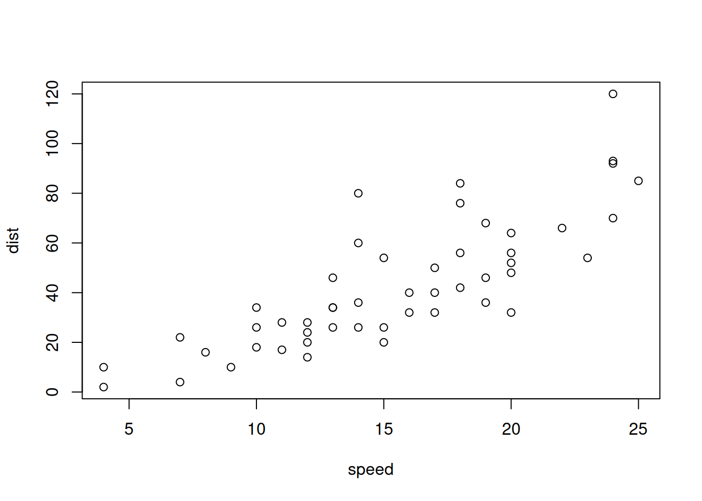
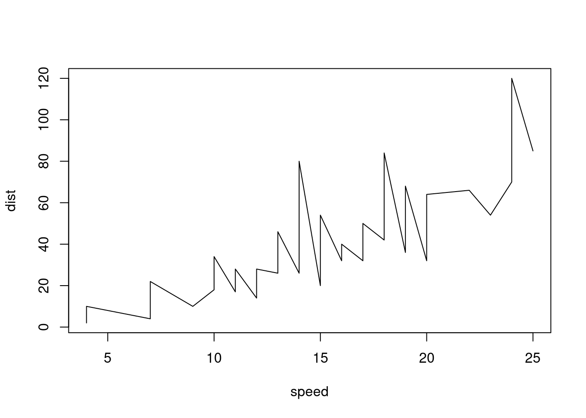

Práctica 01 - Introducción a RMarkdown
Prof.: Pedro Albarrán
Prof.: Alberto Pérez
Universidad de Alicante, Curso 2020/21
1. Introducción
R Markdown proporciona un marco de autoría unificado para la ciencia de los datos, que combina su código, sus resultados y su comentario en prosa. Los documentos de R Markdown son completamente reproducibles y soportan docenas de formatos de salida, como archivos PDF, archivos de Word, presentaciones de diapositivas y más.

Flujo de Trabajo.
Los archivos R Markdown están diseñados para usarse de tres maneras:
Para comunicarse con quienes toman decisiones, que quieren centrarse en las conclusiones, no el código detrás del análisis.
Para colaborar con otros analistas de datos (¡incluido tú en el futuro!), quiénes están interesados en las conclusiones y cómo se alcanzaron (es decir, el código).
Como un entorno en el que hacer análisis de los datos, como un cuaderno de laboratorio actual donde se puede capturar no sólo lo que hizo, sino también lo que estaba pensando.
Análisis reproducible con R Markdown
El concepto de programación literaria o letrada (“literate programming”) fue introducido por Donald Knuth hace décadas. La idea es que la documentación pertinente para el código -que es comprensible no sólo para el programador, sino también para otros seres humanos- se produce junto con el propio código. En el análisis de datos, esto se manifiesta como la necesidad de tener tres tipos de cosas en un documento: el código, los resultados de ese código y el análisis escrito.
Los paquetes de R rmarkdown y knitr son el entorno ideal para un flujo de trabajo de análisis reproducible. Esta presentación de Prezi lo explica muy bien.
Obteniendo ayuda
R Markdown integra una serie de paquetes de R, incluyendo rmarkdown yknitr, y herramientas externas. Esto significa que la ayuda, por lo general, no está disponible a través de ?. En su lugar, al usar R Markdown en el futuro, ten estos recursos a mano:
“Chuleta” (“Cheat Sheet”) de R Markdown: Help > Cheatsheets > R Markdown Cheat Sheet,
Guía de Referencia de R Markdown: Help > Cheatsheets > R Markdown Reference Guide.
Como ya hemos visto con otras, estas chuletas también están disponibles en http://rstudio.com/resources/cheatsheets. También podéis encontrar un libro online sobre R Markdown aquí.
2. Guía básica de R Markdown
Comenzamos por crear un nuevo documento de R Markdown. Dentro de RStudio, se puede generar un nuevo archivo de R Markdown a partir de una plantilla seleccionando R Markdown en la opción Nuevo archivo del menú Archivo (File > New File > R Markdown). Si el paquete rmarkdown no está instalado y cargado, en este momento RStudio nos pedirá instalarlo. Esto genera el cuadro de diálogo. El formato de salida predeterminado es HTML, pero otras opciones (PDF o Microsoft Word) están disponibles. La salida formateada se puede generar y mostrar haciendo clic en HTML del botón “Knit” en RStudio. En el botón de al lado, con forma de tuerca, se pueden cambiar algunas opciones por defecto, como dónde se visualiza, si se ejecuta el código, etc.
Sin el beneficio de RStudio, se pueden utilizar los comandos en el siguiente bloque de código, que también se puede utilizar cuando se ejecuta R.
library(rmarkdown)
render("nombreArchivo.Rmd") # crea nombreArchivo.html
browseURL("nombreArchivo.html")Cuando tejes (“knit”), compilas o renderizas el documento, R Markdown envía el archivo .Rmd a knitr, que ejecuta todos los fragmentos de código y crea un nuevo documento de markdown (.md) que incluye el código y su salida. El archivo generado por knitr es procesado por pandoc, que es responsable de crear el archivo finalizado. La ventaja de este flujo de trabajo de dos pasos es que puede crear una amplia gama de formatos de salida.
En principio, tendríamos que instalar Pandoc (http://pandoc.org) por separado; afortunadamente RStudio lo lleva incluido. A continuación se debería instalar el paquete rmarkdown en R, si no está instalado. Los documentos de R Markdown pueden aprovechar muchas las características disponibles a través de Pandoc Markdown. Estas características no tienen nada que ver con la programación en R, pero proporcionan una rica experiencia de autoría de documentos.
Para crear la salida de PDF, sería necesario tener instalado una distribución de LaTeX como MiKTeX, disponible para Windows y para Mac OS. Para quienes no hayan instalado LaTeX anteriormente, es recomendable instalar TinyTeX (https://yihui.name/tinytex/):
install.packages("tinytex")
tinytex::install_tinytex()TinyTeX es una distribución LaTeX ligera, portátil, multiplataforma y fácil de mantener. El paquete complementario R tinytex instala automáticamente los paquetes LaTeX que faltan al compilar documentos LaTeX o R Markdown en PDF y también asegura que se compila un documento LaTeX el número correcto de veces para resolver todas las referencias cruzadas. (Si no entiendes lo que significan estas dos cosas, probablemente deberías instalar TinyTeX.)
Con el paquete rmarkdown, RStudio/Pandoc y LaTeX, debería poder compilar la mayoría de los documentos de R Markdown. En algunos casos, es posible que necesite otros paquetes de software.
Practicando
Crea un nuevo documento de R Markdown con File > New File > R Markdown. Lee las instrucciones y genera el documento haciendo click en el botón adecuado.
Crea un nuevo documento de R Markdown para cada uno de los tres formatos incorporados: HTML, PDF y Word. Usa knit para generar cada uno de los tres documentos. ¿Cómo difiere la salida? ¿Cómo difieren las entradas?
3. Formato de texto con Markdown
Los archivos .Rmd están escritos en Markdown, un conjunto ligero de convenciones para el formato de archivos de texto sin formato. Markdown está diseñado para ser fácil de leer y fácil de escribir. También es muy fácil de aprender. La siguiente guía muestra cómo usar el Markdown de Pandoc, una versión ligeramente extendida de Markdown que R Markdown entiende.
Formato de texto
*cursiva* o _cursiva_
**negrita** __negrita__
`código`
superíndice^2^ y subíndice~2~
~~tachado~~Encabezamientos
# Encabezado de 1er. nivel
## Encabezado de 2º nivel
### Encabezado de 3er. nivel
#### Encabezado de 4º nivelListas
* Item (elemento) 1 de la lista (no numeradas)
* Item 2
- Item 2a (+ y - son una alternativa a * para listas no numeradas)
+ sub-sub-item
- Item 2b
1. Item 1 de la lista numerada
1. Item 2. Los números se incrementan automáticamente en la salida.
1) Otra forma de crear listas numeradas.
2) En ambos caso, se puede poner explícitamente el número.Líneas de separación
---
***Enlaces e imágenes
<http://example.com>
[frase con vínculo](http://example.com)

[](https://cran.r-project.org/ )
[Página de R][1]
[1]: https://cran.r-project.org/ "Página para descargar R
#### Título 1 {#tit1}
[Enlace a titulo1 mediante su identificador](#tit1)Notas a pie de página
Esto es un texto con nota al pie [^nota1]
y esta es otra nota [^ Esto es la segunda nota al pie.]
[^nota1]: Esto es una nota al pie de página.
[^nota2]: Esto es la segunda nota al pie.Tablas
Primer encabezado | Segundo encabezado
------------------ | ------------------
Celda | Celda
Celda | CeldaCon alineación de columnas
| Items | Cantidad | Precio |
| :------- | :------: | -------: |
| Item 1 | 15 | 9,050 |
| Item 2 | 3250 | 239,99 |Bloques de citas literales
> Esto es parte de un bloque de cita.
> Esto es parte del mismo bloque de cita.
>
> > Esto es otro bloque de cita anidado.
> > Esto es parte del bloque anidado.
>
> Esto es parte del bloque de cita de primer nivel.
Esto es una línea normalLa barra invertida antes de cualquier símbolo de formato o enlace, provoca que no tengan efecto a la hora de convertirse en negritas, cursivas, links, etc.
Se puede introducir directamente código en HTML (útil para algunos formateos como centrar) y LaTeX (útil para ecuaciones); también se pueden incluir diagramas UML.
4. Fragmentos de código
Se puede escribir código de R en un documento de R Markdown. Una opción es escribir código “entre líneas” usando entre dos caracteres “”. Por ejemplo, 5 aparecerá en el documento final como “5”. Para ejecutar varias líneas código dentro de un documento de Markdown R, se debe insertar un fragmento. Hay tres maneras de hacerlo:
El atajo de teclado Cmd / Ctrl + Alt + I
El icono de botón “Insertar” en la barra de herramientas del editor.
Escribiendo manualmente los delimitadores de fragmento
```{r}y```.
Los fragmentos del código de R se pueden utilizar para producir salida de R en documentos o para mostrar simplemente el código como ilustración. Aquí está un fragmento simple del código de R que resultará en el código y su salida que es incluida:
summary(cars)## speed dist
## Min. : 4.0 Min. : 2.00
## 1st Qu.:12.0 1st Qu.: 26.00
## Median :15.0 Median : 36.00
## Mean :15.4 Mean : 42.98
## 3rd Qu.:19.0 3rd Qu.: 56.00
## Max. :25.0 Max. :120.00Para mostrar el resultado del fragmento de código, pero no código de R que lo genera, se especifica la opción echo=FALSE:
## speed dist
## Min. : 4.0 Min. : 2.00
## 1st Qu.:12.0 1st Qu.: 26.00
## Median :15.0 Median : 36.00
## Mean :15.4 Mean : 42.98
## 3rd Qu.:19.0 3rd Qu.: 56.00
## Max. :25.0 Max. :120.00Se puede incluir un identificador del fragmento despues de r (separado por espacio o por comas igual que el resto de opciones del fragmento):
## speed dist
## Min. : 4.0 Min. : 2.00
## 1st Qu.:12.0 1st Qu.: 26.00
## Median :15.0 Median : 36.00
## Mean :15.4 Mean : 42.98
## 3rd Qu.:19.0 3rd Qu.: 56.00
## Max. :25.0 Max. :120.00Tened en cuenta que los trozos de código R también se pueden utilizar sólo para procesar el código de R, mostrando el resultado pero no el código:

Para mostrar el código R sin evaluarlo, especifique la opción eval = FALSE:
summary(cars)Notad que sí un fragmento no se evalua, sus resultados no están disponibles para partes posteriores del documento. Es importante que si queremos cargar unos datos o una biblioteca necesarios para después o hacemos un cálculo cuyo resultado se usa posteriormente nos aseguremos de que estamos evaluando ese fragmento.
Como se ha visto anteriormente, la salida de fragmentos puede personalizarse con opciones. Una lista completa de opciones de los fragmentos (argumentos suministrados en el encabezado del fragmento) está disponible aquí. Prestad especial atención a las opciones:
echo,evaleinclude(ya comentadas)warning,errorymessage: mostar o no avisos, erroresfig.widthyfig.height(ofig.dim): fijar las dimensiones de una figuraout.widthyout.height: dimensiones de una figura en el documento de salida (pueden ser diferentes de lo anterior, que son las reales de la figura)fig.align: mostrar la figura centrada o alineada a derecha o izquierdafig.cap: leyenda de la figurafig.show: cómo mostrar la figura
Por ejemplo, podemos poner dos figuras una al lado de otra con fig.show = "hold" y out.width = "50%":
# en la izquierda
plot(cars)
# en la derecha
plot(cars, type = "l") El comando opts_chunk$set() cambia las opciones por defecto globales en un documento: por ejemplo, knitr::opts_chunk$set(echo=FALSE, fig.width=6, fig.height=6). Este comando se suele situar al principio del documento, en un fragmento que sí se incluye para evaluar. También es conveniente incluir (casi) todas las bibliotecas en el primer fragmento de código que se dedica a opciones generales (generalmente sin mostrar, al menos, los mensajes).
Comentarios adicionales
Para mejorar la salida de algunos comandos que producen tablas, es conveniente utilizar librerias adicionales que mejoren la presentación:
La librería
printrmejora las salidas en html de algunas tablasLa libreria
xtableofrece el comandoxtabley otros para presentar objetos de R de forma más elegantes en html y LaTeX. Nota: si el objeto no es un “data frame”, lo convierte en uno; esto puede implicar que añada nombres de filas.La libreria
knitrofrece la funciónkable(). Existe una librería que extiende su funcionalidad,kableExtra; se puede encontrar ayuda aquí.La librería
panderofrece el comandopandoc.table().
Formato en la cabecera (YAML)
Además de las opciones para controlar la forma en que se muestran los fragmento del código de R, una serie de características del documento se pueden especificar en R Markdown. Para esto, podemos establecer unos parámetros en la cabecera del documento con YMAL (“Yet Another Markup Language”). Con la síntaxis de YAML se pueden especificar opciones del documento desde título, autor, etc hasta opciones de visualización. Por ejemplo,
---
title: "Título"
author: Autor
date: 15 septiembre 2020
output: html_document
---incluye también una línea de fecha y el tipo de documento de salida por defecto como HTML. Podéis encontrar una descripción bastante completa de las opciones (en inglés) aquí.
Algunas opciones que podéis encontrar relevantes son (no todas tienen que especifacarse a la vez) son incluir un índice (toc), tener secciones numeradas (number_sections), la posibilidad de ocultar del código en un fragmento (code_folding), cambiar el tema (theme) del documento (p.e., con uno extraido de la galería Bootswatch)
---
title: "Título"
output:
html_document:
toc: true
number_sections: true
code_folding: hide
theme: united
---También se pueden fijar características de las figuras directamente en el encabezado
---
title: "Título"
output:
html_document:
fig_width: 7
fig_height: 6
fig_caption: true
---Finalmente una opción interesante cuando queremos mostrar un conjunto de datos muy largo es fijar la opción df_print a paged (además de la opción por defecto, otra posibilidad es kabble)
---
title: "Título"
output:
html_document:
df_print: paged
---Mini-práctica
Iniciar un nuevo documento de R Markdown desde el menú Archivo. Añade un encabezado con, al menos, título y tu nombre como autor o autora. Mantén los dos fragmentos de código, pero elimina el texto incluido por defecto y cambialo por un título y un par de secciones propias en castellano (no importan lo que diga, puede ser copia-pega de cualquier sitio). Renderiza el documento y experimenta con el ajuste YAML para el ancho de figura, observando cómo cambia.
Añade al texto
un par de secciones y/o sub-secciones adicionales
algún párrafo o línea de texto adicional
un par de listas
algún vínculo
una imagen
alguna nota a pie de página
citas
Reutiliza los fragmentos del
summaryy del gráfico para generar nuevos fragmentos en los que cambias los valoresecho. Añade una frase antes de cada código, una leyenda en uno de los gráficos y renderiza el documento.Añade un fragmento con el código
a <- 2, y la opcióneval=FALSE. Añade otro fragmento posterior con código3 + a(que sea evaluado). Renderiza el documento y comprueba que da un error. Cambia las opciones para que se pueda renderizar el documento.Carga la biblioteca
printrentre dos comandos desummaryy renderiza el documento. Comprueba las diferencias entre la salida antes y después de cargarprintr.Antes de que
printresté cargado, añade fragmentos mostrandohead(mtcars)ysummary(mtcars)como tablas usando las funcionesxtable()ykable(). Renderiza el documento y añade una frase comentando la diferencia entre la salida directa de los comandos y las salidas con cada función.Carga la biblioteca
tidyverseen un fragmento de código. Cambia los valores dewarning,errorymessagey renderiza el documento para observar los cambios.Mostar en un fragmento de código el conjunto de datos
mtcars. Comprobar el efecto antes y después de incluirdf_print: pageden el encabezado.Comprobar cómo cambia el documento al incluir
code_folding: hidey al cambiar el tema.Usar el código
format(Sys.time(), "%B %e, %Y a las %H:%M:%S"))en una línea de texto para mostrar la fecha y hora en la que el documento se renderiza.Rellenad este FORMULARIO con vuestros datos y subid
- vuestro archivo de .Rmd
- el archivo .html resultado de compilarlo en RStudio.
IMPORTANTE: los nombres de los dos archivos DEBEN EMPEZAR con vuestro número de DNI (el resto es libre): ej.,
12345678_P01_midoc.Rmd
12345678_P01_midoc.html